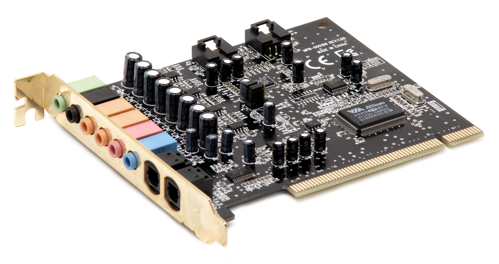

If your motherboard does not come with a built-in sound card, use these guidelines when buying one.
If you do not plan to use your computer in the above ways, you will probably be able to use a simple sound card. These cost very little.
If you need a high-end sound card, do your research. Just like graphics cards, there is a lot of competition in the realm of technology. They can include stereo, 5.1 or 7.1 surround sound. Some have ports for a subwoofer and numerous speakers and other possible connections.
